0pen-C3-01
0pen-C3-03
0pen-C3-01
0pen-C3-03
|
|
Open-C3自动化运维平台 |
在整个的运维环节中，对产品的持续构建（CI）持续部署（CD）伴随着产品的整个生命周期。 一个运行良好的运维系统可以辅助提升运营效率，达到持续运营（CO）的效果。OPEN-C3为解决CI/CD/CO而生。
对于运维来说，CI/CD很容易理解，就是持续的构建，持续的发布。但是对于Open-C3来说，我们想做的更多，运维不紧紧是要持续的构建持续的发布应用。还需要监控业务的状态，在业务异常时候作出相应的调整。或者根据业务的需求进行业务部署的调整。系统运维的工具平台能业务运营提供工具平台支持。举个游戏行业的例子，比如对于游戏的运营，运营团队根据在线人数等数据，可能会做出决定，需要开一个新的区域。 这时就可以通过平台里面编排的流程进行一键的创建。这就是运维工具为运营提供了支持。所以我们加上了CO的概念。
CI/CD/CO 我们称之为C3， 同时3有“多”的意思。我们希望可以持续的做一些事情。包括C3这个项目本身，希望可以持续的做下去。
本文主要是对运维和运维开发的人员讲解Open-C3的功能和使用方式。如果你正考虑在一个新的企业环境中构建一个自动化运维平台，如果你正考虑使用Open-C3来担任这个运维平台的职责，那么本书正合适指导你一步一步的进行安装和使用。
Open-C3中的功能太过复杂，我们在github中存放了使用手册，但是不熟悉Open-C3的初始用户，可能感觉无从下手。本书最为主要的功能，就是告诉用户，在一个新企业中，怎么一步一步的把Open-C3安装、配置、使用起来。在能讲明白这个的事情之上，才会做一些更深入的探讨。
所以本书是除了第一章，后面的章节都是按照顺序进行的，最好按照顺序阅读和实施，这样更容易理解。
Open-C3提供了一个完整的自动化运维平台，下面具体讲解每个模块的主要功能和职责。
I ) CMDB主要功能：
1）提供一个完成的记录企业资源/资产的数据库
· 支持的公有云但不限于：AWS、腾讯云、华为云、阿里云、谷歌云、金山云。
· 私有云: OpenStack
· IDC资源： 主机、数据库
2）提供搜索功能
· 模糊全局搜索，比如搜索一个IP
· 根据不同的过滤条件过滤资源
3）提供时间机器功能，可以选择回看历史记录
4）提供资源的一些常规操作：
· 给资源打标签（tags）
· 给资源添加备注
· 查看资源监控信息【跳转到监控系统页面打开对应资源的监控】
· 查看资源详情
5）提供服务树分组功能
· 服务树是C3中是一个很重要的概念，资源、监控策略、发布流水线、权限等都是跟服务树进行关联。
6）给其它子系统提供数据
· 给监控系统和发布系统提供资源分组
II) 次要功能：
1）提供服务分析能力
· CMDB中包含中包含了企业基础所有的资源列表和详情。可以跟进这个内容生成调用关系。
2）为第三方系统提供接口
· 给堡垒机提供资源列表
1.4.1.3 界面截图：
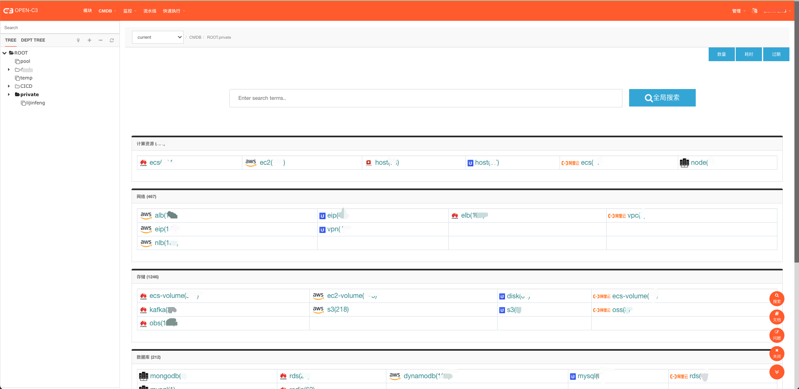
（CMDB资源概览）

（CMDB服务分析图）
I ) 主要功能：
1）支持监控常规资源：主机、Mysql、Redis、MongoDB
· 除了常规指标，还支持自定义进程、端口等监控
2）支持云监控：阿里云、华为云、AWS、谷歌云、腾讯云 等。
3）支持KUBERNETES监控
4）支持根据服务树纬度查看资源看板
5）提供告警处理功能
· 提供页面显示当前告警列表
· 告警认领、告警屏蔽、告警升级功能
II ) 次要功能：
1）支持其他类型监控，如： ssl证书过期、域名监控
III ) 界面截图：

（主机监控图）

（数据库监控图）

（KUBERNETES集群监控图）

（当前告警页面）

（告警消息）
I ) 主要功能：
1）支持发布流水线，支持传统主机发布、支持Kubernetes应用发布
· 支持主机分批发布
· 支持一键回滚
2）发布过程有支持审批步骤
II ) 界面截图：

（某个服务树下流水线列表）
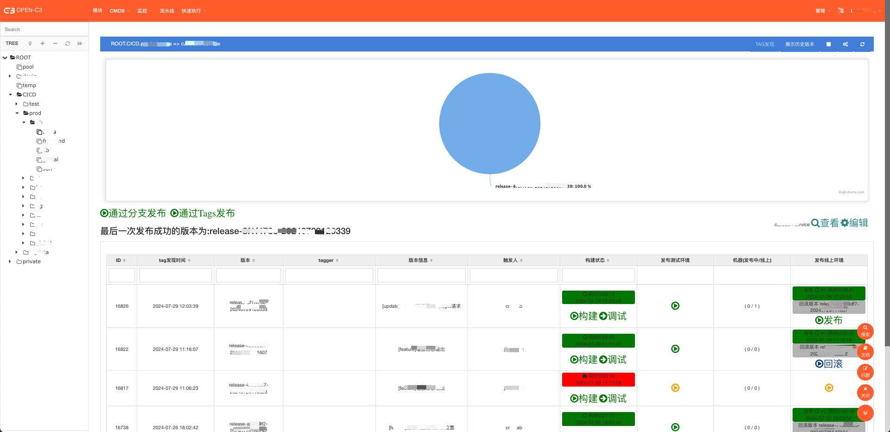
（单个流水线）
I ) 主要功能：
1）支持监控告警和作业进行关联，起到告警触发修复作业的作用。
II ) 界面截图：

（故障自愈触发列表页）
I ) 主要功能：
1）支持工单的生命周期管理：工单创建、分配、处理、关闭。
2）支持消息通知
II ) 界面截图：
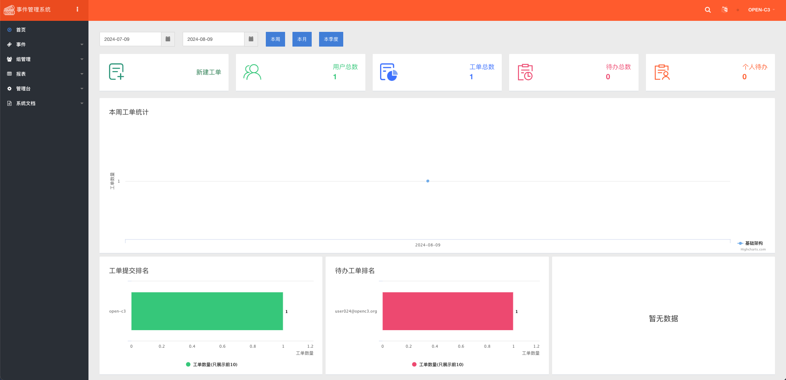
（工单首页）

（工单提交页面）
I ) 主要功能：
1）自动化流程支持创建云资源或者修改云资源配置：
· 腾讯云： CVM、CLB、Mysql 等
· AWS： EC2、SQS 等
· 谷歌云：VM、LB 等
2）流程过程支持审批
3）流程系统支持对接工单
II ) 界面截图：

（流程提交页面）
I ) 主要功能：
1）自动识别低利用率资源
· 主机： 主机利用率、磁盘利用率
· AWS： RDS、Redis、ALB、ELB、NLB, AWS磁盘卷
· 腾讯云: CLB、Redis
· 华为云：RDS、Redis
2）添加费用计算功能，计算服务树费用、资源费用
· 支持： 华为云、AWS
II ) 界面截图：
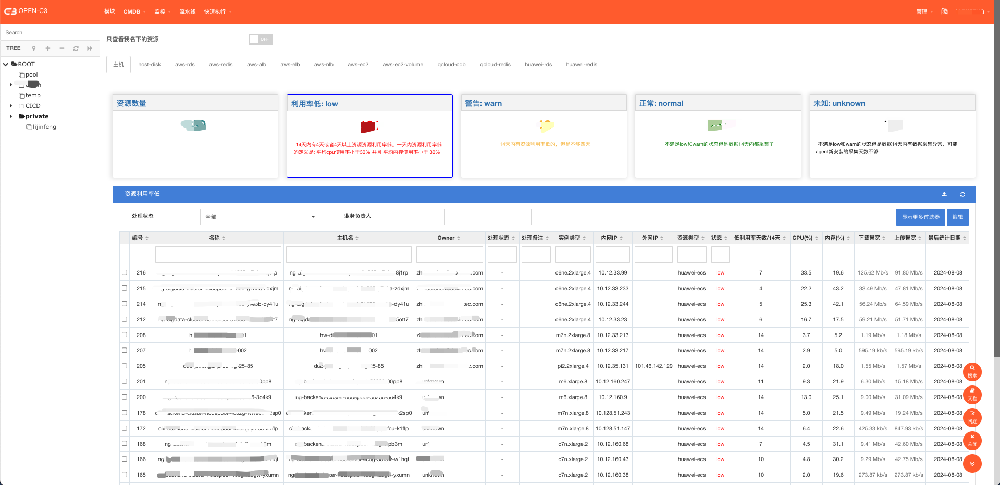
（低利用率资源查看页面）
Open-C3使用GNU许可(GNU General Public License,简称GPL)，可以自由使用。允许任何人自由运行、研究、分享和修改。
OPEN-C3安装分为体验版、单机版和集群版，请根据实际情况进行选择。
为了让用户快速体验OPEN-C3的功能，OPEN-C3提供了体验版。
通过Docker命令启动服务，当前使用8080端口，根据自己的情况修改。
docker run -p 8080:88 openc3/allinone:latest
访问服务：http://localhost:8080 。
用默认账号登录
· 用户： open-c3
· 密码：changeme
准备一台服务器，配置如下：
· 操作系统：CentOS 7
· CPU: 4核
· 内存: 8G
注：一般情况下使用以下安装方式即可，如果有网络问题，请使用C3安装器进行安装。
curl https://raw.githubusercontent.com/open-c3/open-c3/v2.6.1/Installer/scripts/single.sh | OPENC3VERSION=v2.6.1 bash -s install 10.10.10.10#(机器的ip地址,如果需要通过公网访问，请填写公网ip)
#访问不了github的用户可以使用下面命令进行安装【以gitee作为数据源】：
#curl https://gitee.com/open-c3/open-c3/raw/v2.6.1/Installer/scripts/single.sh | OPENC3VERSION=v2.6.1 OPENC3_ZONE=CN bash -s install 10.10.10.10.... [SUCC]openc-c3 installed successfully.=================================================================Web page: http://10.10.10.10User: open-c3Password: changeme[INFO]Run command to start service: /data/open-c3/open-c3.sh start ... Creating openc3-mysql ... doneCreating c3_openc3-server_1 ... done[SUCC]started.注：程序安装后会产生两个目录
· /data/open-c3用于存放代码
· /data/open-c3-data用于存放数据【包括数据库数据，日志等】。
通过80端口访问服务
用默认账号登录
· 用户： open-c3
· 密码：changeme
集群版本安装细节在官方文档可以查看，正常情况下安装单机版本即可。
运维平台使用的第一步，我们需要把要管理的资源先托管到平台中。需要把你的公有云帐号、私有云帐号、或者IDC资源先托管到平台中。平台会定时的进行同步。
托管进来的资源需要一个合适的分组，需要跟进业务情况配置好服务树的结构，然后把资源挂载到对应的服务树上。这样监控系统、发布系统等就可以方便的获取分组的资源。业务后续添加或回收资源，只要在服务树上进行对应操作即可，不用调整监控和发布的配置。
在“管理”->“CMDB”菜单。导入自己的云帐号
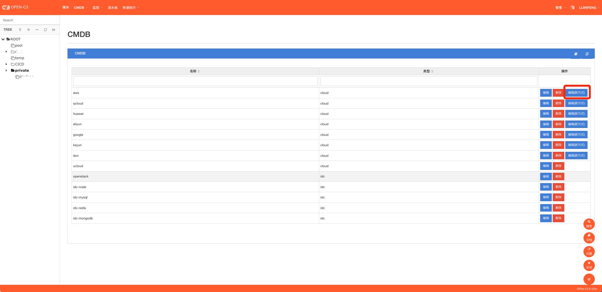

如果想调整资源同步的频率，可以在”管理”->”系统参数”中进行修改
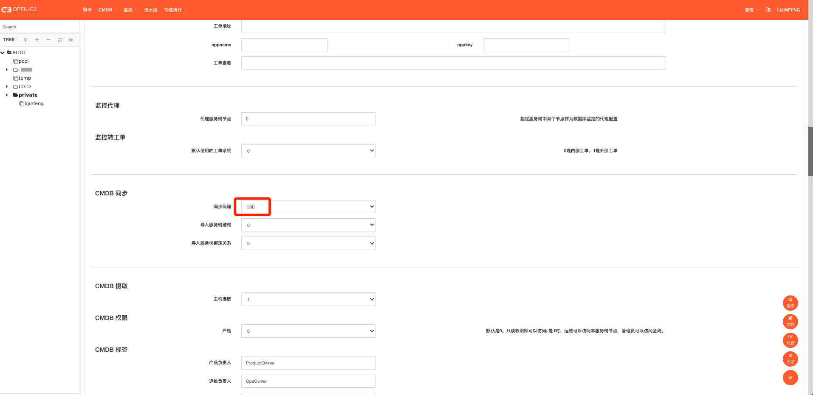
服务树是一个很重要的概念，这里我们按照业务情况创建服务树。
在”管理”->”编辑服务树节点” 菜单。这里我们可以右键选择服务树节点来创建和删除节点。
推荐的服务树结构，你可以跟进企业的业务的复杂度进行选择：
类型一：
ROOT-> 子公司 ->事业部-> 部门 -> 服务 -> 模块
类型二:
ROOT-> 事业部-> 部门 -> 服务 -> 模块
类型三:
ROOT-> 部门 -> 服务 -> 模块

自动同步下来的资源没有挂树，根据下面的配置把资源自动的挂载到某些服务树下。
一般我们会创建一个服务树节点，如: ROOT -> 企业 -> pool 或者 ROOT -> pood
新创建出来没有挂服务树的资源自动的挂到该节点上，根据下面的配置来完成
# cat /data/open-c3/AGENT/device/conf/config.defaulttree.private default: xxx.pool
注: 其中xxx.pool 就是你想挂载的服务树， 不用写ROOT的部分。
这样就可以通过查看pool节点的资源，清楚知道哪些资源没有挂树，也可以在pool节点上配置监控策略等。
方式1：
通过配置/data/open-c3-data/buildintree/v2.yml文件来实现。
下面以华为CCE（CCE是华为云上的KUBERNETES服务）节点为例子
cat /data/open-c3-data/buildintree/v2.yml compute: huawei-ecs: - tree: xxx.ops.cce.xx-backend-cluster match: - [ 'tags', '/xxxxxxxx-xxxx-xxxx-xxxx-xxxxxxxxxxxx/' ] - [ 'tags', '/CCE/' ] - tree: xxx.ops.cce.xx-bigdata-cluster match: - [ 'tags', '/xxxxxxxx-xxxx-xxxx-xxxx-xxxxxxxxxxxxx/' ] - [ 'tags', '/CCE/' ] - tree: xxxx.ops.cce.unknown match: - [ 'tags', '/CCE/' ]
这样配置后，CCE节点池自动扩缩容时，资源挂树的动作会自动完成。
方式2:
通过云资源tags来控制。
云资源上是可以打标签（tags）。 如果云资源上存在名为“tree”的标签。 Open-C3会跟进这个标签来挂树， 比如资源有一个tags名为tree,值为 xxx.ops 。那么资源同步到CMDB后，会自动挂到xxx.ops服务树下。
可以勾选资源ID前面到选择框对资源进行挂树操作。
复制到： 资源是可以同时挂在多个服务树上的，“复制到”按钮会把该资源复制到其他服务树，点击后会出现服务树选择的弹窗，选择服务树后，资源会被服务树到该服务树上。
移动到： “移动到”和“复制到”的区别是，操作完后，该资源会被移动到目标服务树，同时会在当前服务树中移除，是一个移动的动作。
归还: 资源归还后，会回到默认的pood节点。
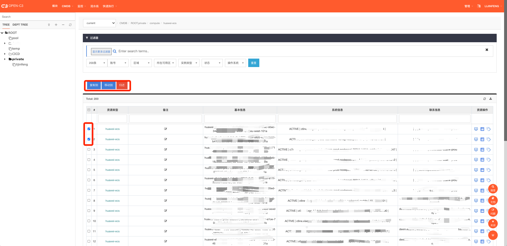
通过上面的操作后，CMDB基本完成，可以对资源进行挂树，可以查看资源，搜索资源。也可以选择时间查看某个历史时刻的资源详情。
如果你用的不是云资源，可以在“管理”-> “CMDB”菜单 中选择idc类型，把你的资源托管到CMDB中。
为了让这个文章更连贯，这里先不展开讲怎么添加自定义的资源，怎么使用服务分析功能。在后续的其他章节中在展开。
主机监控是一个最常见的监控类型。根据主机监控的添加，能更好的理解监控系统的整个配置过程。
打开”业务管理”->”代理设置(AGENT安装)”页面。

Open-C3中和主机相关的有两个AGENT，一个是发布的AGENT（截图中的“安装AGENT”）一个是监控的AGENT（截图中的“安装AGENT MON”）。
有的企业只用到Open-C3的监控功能，有的企业可能只用Open-C3的发布功能。所以这里目前这两个AGENT是独立安装的。但是目前监控AGENT依赖发布AGENT的文件，所以这里先把监控和发布的都进行安装。不想启动发布AGENT的，在把发布AGENT停掉。
根据截图中的链接，把发布AGENT和监控AGENT安装上。
安装完后，我们可以到“监控”->”监控看板”中查看资源的监控看板。Open-C3会根据你点击的服务树的深度，显示不一样的看板。

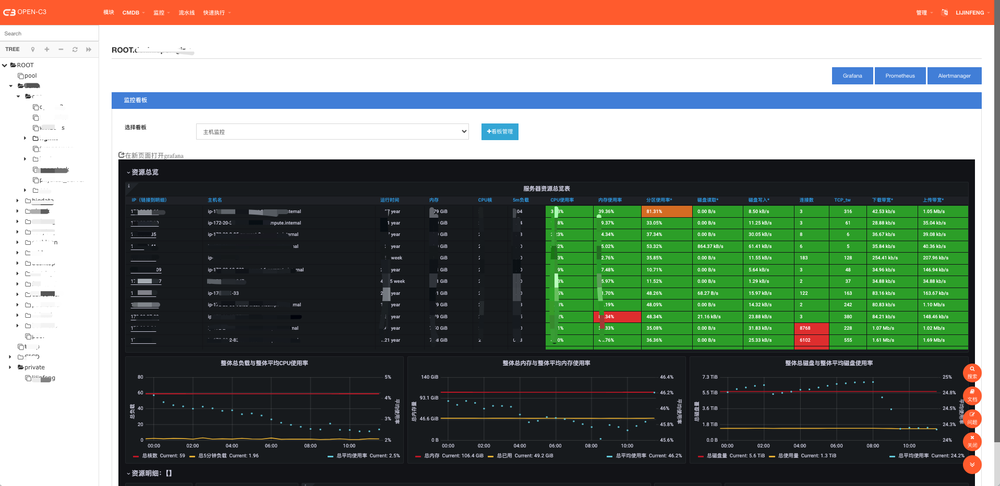
Open-C3系统会对外发送三种消息，邮件、短信（短信、飞书消息、钉钉消息等都归为同一类）、语言电话。
同时Open-C3提供了不同的方式对接。主要分为连接器对接和直接对接。连接器对接是设想企业中应该有发送这三类消息的接口，把这些接口配置到Open-C3的连接器配置中即可【当然Open-C3的接口需要符合一定的格式】。
到“管理”->”设置连接器”页面设置消息出口。
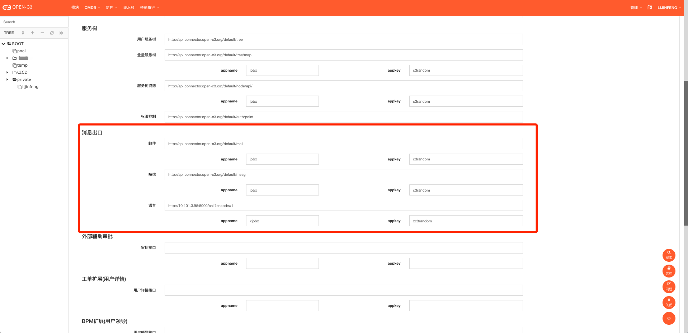
消息出口需要appname和appkey完成验证【添加http的Header】。
I ) 邮件
配置的地址示例:
http://api.connector.open-c3.org/default/mail 调用方式：POST
参数user：用户名，接口需要自己查询对应的用户的邮箱地址
title:邮件标题
content:邮件内容
返回：{ stat： true }
II ) 短信
配置的地址如下:
http://api.connector.open-c3.org/default/mesg 调用方式：POST
参数user：用户名，接口需要自己查询对应的用户的手机号
mesg:短信内容
返回：{ stat： true }
III ) 语音
配置的地址如下:
http://api.connector.open-c3.org/default/mesg#使用内置是和短信接口一样
调用方式：POST
参数user：用户名，接口需要自己查询对应的用户的手机号
mesg:语音内容
返回：{ stat： true }
I ) 邮件
到“管理”->”系统参数”配置邮件配置。
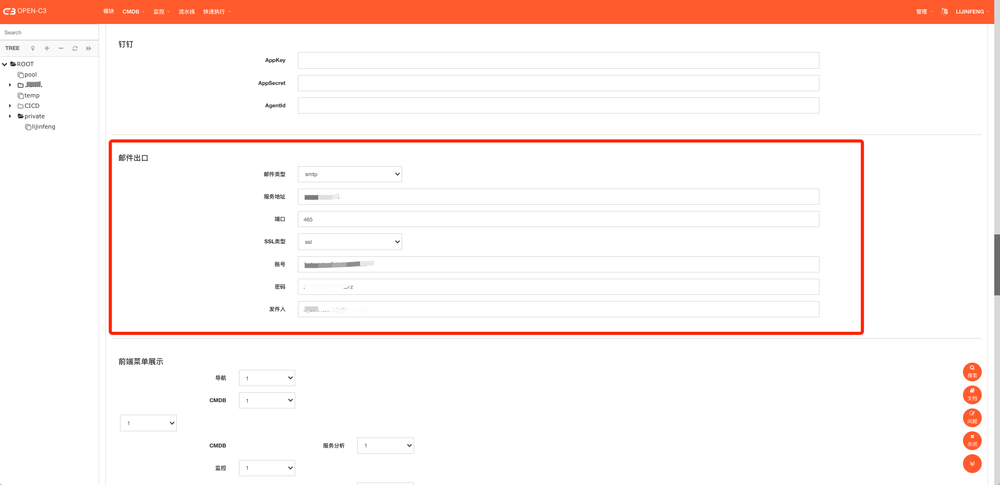
II ) 短信
短信目前支持飞书、钉钉、Lark
v 钉钉：

v 飞书：
飞书到配置文件 /data/open-c3-data/sysctl.conf 中配置 sys.send.feishu.app_id 和 sys.send.feishu.app_secret 字段
v Lark：
Lark到配置文件 /data/open-c3-data/sysctl.conf 中配置 sys.send.lark.app_id 和 sys.send.lark.app_secret字段
III ) 语音
语言目前只支持连接器对接的方式。
如果不配置模版，发送出来的内容会很简单。这里需要到“管理”->”模版管理”页面配置一下告警消息的模版。
如果不想做太多调整，直接点击右上角的复制模版按钮，复制出标准模版然后保存即可。

系统设计了消息总开关，确保消息开关是开启的状态，到“管理”->”通知管理”把告警系统的全部勾选上。
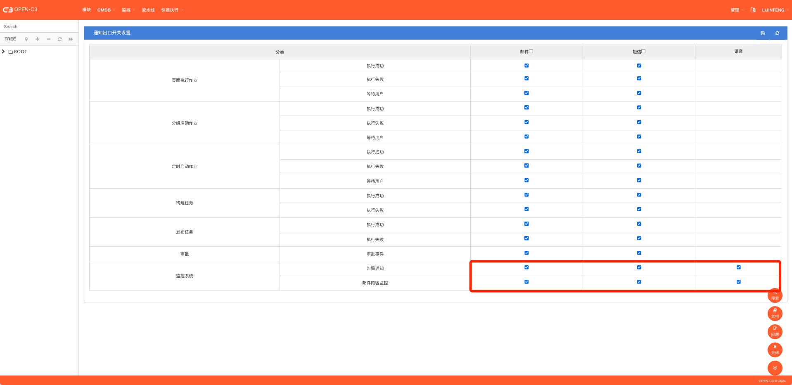
在“配置消息出口”章节中，我们定义了三个消息出口。当我们在配置告警的时候，最简单的例子是我们通过用户名称来配置告警接收人，比如 zhangsan 。
系统在把消息往外发送之前，会在地址簿里面查找有没有定义该用户的地址簿。如果有，会根据地址簿中的配置做一层转换。
举个例子：
当前短信出口，我们用的是连接器的方式。如果不配置地址簿，当我们给zhangsan发送短信消息的时候，传递给短信接口的用户这个字段的内容是“zhangsan”。 这样就要靠短信接口自己寻找zhangsan的手机号然后发送短信。这个也是合理的方式，有的企业的消息出口就是根据用户名来发送消息的，他们会查询自己公司的OA系统来找用户的手机号然后发送消息。 但是如果我们配置了地址簿，比如地址簿中我配置了zhangsan的手机号是133xxxxxxxx , 那么在调用短信接口的时候，用户的字段就变成133xxxxxxxx。
同时，系统提供了一下简单的消息发送的方式，比如飞书机器人，这个不需要预先配置任何东西，在飞书上创建机器人后，在地址簿的消息

在对应服务树上配置监控策略，进到“监控”-> “监控配置”页面，点击对应的服务树。监控策略是配置在服务树上的，资源也是挂载到服务树上。 所以正常情况下，你想这个策略监控哪个服务树上的资源，就到那个服务树上配置监控策略。
注： ROOT节点的服务树不允许配置监控策略。
首次使用，可以直接从“通过模版添加监控策略”来导入一些常用的监控策略。

监控策略是绑定在服务树上的，告警接收人也是绑定在服务树上的。所以想接收哪个服务树上的告警，就到“监控”->“监控配置”中添加保荐人即可。 这里可以填写地址簿中之前添加的用户。

通过上述配置后，当告警发生的时候，就会收到对应的邮件、短信、电话语言。下面是飞书收到消息的例子。
可以到“监控”-> “当前告警”页面查看当前正在发生的告警。
（当前告警页面）
这个章节我们主要讲了主机监控的配置，为了更简洁与连贯，我们没有展开讲关于告警组、策略分组、策略的不同配置方式等。
在上一章节的监控中，我们讲到了监控AGENT的安装，同时也讲到了监控AGENT和发布AGENT是两个不同的AGENT。我们讲到我们安装完AGENT之后，Open-C3系统就可以采集所有的主机的监控数据。
监控AGENT监听端口：65110
发布AGENT监听端口：65111
但是现在我们考虑一个问题， 如果企业中划分了很多小的网络，比如VPC，他们之间没有互通怎么办？
如果你的企业中不存在这个问题，可以跳过这个章节。
Open-C3的监控和发布的AGENT，内置代理功能，每个隔离的网络区域中，Open-C3只要能访问这个区域里面其中一台机器，监控和发布的AGENT就能正常工作。
只需要在Open-C3的页面中配置好网段信息，系统就会自动进行代理。
进到“业务管理”->”代理设置（AGENT安装）”页面。 同时因为代理是和服务树节点是相关的，现在我们配置一个缺省的代理（配置在ROOT服务树节点上）。
点击右上角的➕按钮创建代理。

创建代理的时候只需要提供代理的名称

代理创建完后，我们需要设置代理的IP和代理的网段。代理的IP就是指这个网络不通的区域，我们需要一台机器能同，这个机器就是代理的IP，一般情况下是个公网IP。

添加完代理IP，我们需要添加代理网关，也就是说，Open-C3在遇到这些网段的时候，会从刚才的代理IP进入。
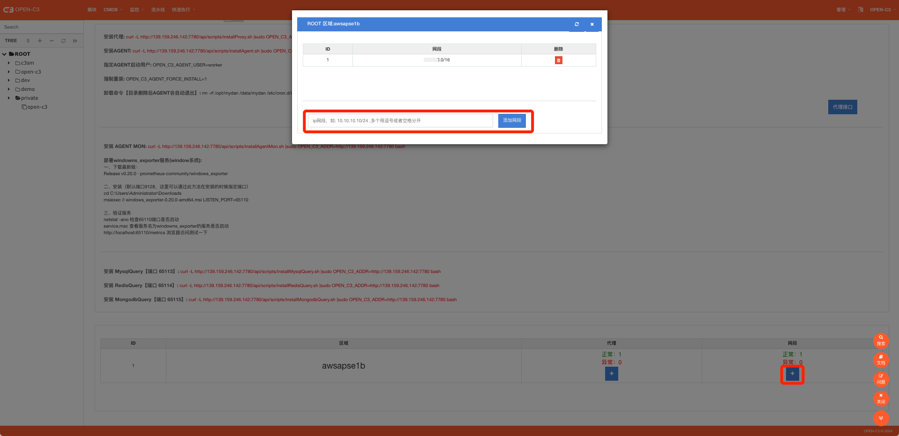
网段的配置越精确优先级越高。举个例子：
比如当前你配置了两个区域：
区域A: 代理ip是 100.100.100.1 ， 代理的网段是 10.0.0.0/8
区域B: 代理ip是100.100.100.2, 代理的网段是 10.10.10.0/24
当监控系统或者发布系统想调用IP 10.10.10.2 时，它可以匹配上区域A和区域B，但是因为区域B描述的网段更精确，所以会选择区域B中的代理ip 100.100.100.2来代理10.10.10.2。
这里我以发布AGENT举个例子，比如现在我在服务树节点 ROOT.open-c3.test 上配置了一个主机发布流水线【不是KUBERNETES类型的发布】。
那么在给要发布的机器发送指令的时候。 Open-C3系统首先会在 ROOT.open-c3.test 节点的代理配置中找是否有匹配的代理，如果没有，会到它的父节点 ROOT.open-c3查找，如果在没有接着往上找，知道找到ROOT节点。
所以里面存在了一个继承的关系，我们可以在ROOT节点配置全局的代理，如果哪个服务树需要微调，可以在自己本服务树上在进行配置。
监控代理的说明：
我们这里可以想到，发布和监控连接主机的区别。发布的时候，因为发布流水线是配置某个服务树上的，发布AGENT调用的时候就可以很明确的匹配到代理的配置【匹配当前服务树节点的代理配置，如果不匹配就往父节点查找，一直查到到ROOT节点】。 但是监控AGENT调用的时候有一个区别。因为服务器节点可以挂在多个服务树下，然后采集监控数据的时候，我们不会做重复的采集，所以一个节点挂在多个服务树上，但是我们只会采集一次。这样就会导致代理配置不明确的问题，比如一个节点挂在两个服务树上，但是两个服务树对该节点的代理配置以哪个为准？对于这种情况，监控系统默认全部从某个服务树节点获取配置，而不在区分资源挂在了哪个服务树下面。该节点默认是ROOT节点，也可以在系统配置中自己定义。
自定义监控节点的代理服务树节点，到“管理”->”系统参数”下面进行设置：
代理解决了让Open-C3能调用通所有机器和数据库的问题。有了代理功能，企业在使用多隔离网络区域的情况下，只需要极小的调整，就可以让Open-C3可以访问通所有的资源。同时代理功能可以减少网络传输的流量，在跨区域传输文件的时候，每个区域只需要同步一份数据，然后会自动的在区域内部进行分发。
这一章节，我们讲关于数据库直连的监控，数据库监控指标的采集，有的指标可以通过连接数据库获取指标，有的需要通过云平台的接口（比如Mysql磁盘使用率）。其中可以通过连接数据库获取的指标我们称为直连监控。 通过云平台的接口获取的部分我们归类为云监控。
数据库的监控都是通过采集器来完成了。如果企业中，Open-C3部署的机器可以访问所有的数据库，没有使用过上一章节所说的代理，则不用单独部署AGENT。 采集器会在Open-C3上执行。
但是如果使用了代理的功能，则需要在代理机器上部署采集器管理器【可以把所有的代理机器都安装上管理器，或者只在该区域存在数据库的情况下进行安装】。
安装方式，进到”业务管理”->”代理设置（AGENT安装）”页面。

执行这些命令进行安装，同时确保Open-C3的机器到这些代理机器的对应端口可以访问通。
系统内置了两个模版：
sys.db-mysql-base-global: 监控对象是所有的数据库资源
sys.db-mysql-base-local: 监控对象是本服务树资源，也就是你所配置监控策略的服务树节点，监控的就是本服务树的资源
如果这两个模版不满足需求在自行调整。

打开下面目录，导入对应看板：
https://github.com/open-c3/open-c3-guide/tree/main/attachments/monitor/grafana/database
注：国内地址：
https://gitee.com/open-c3/open-c3-guide/tree/main/attachments/monitor/grafana/database
默认的grafana 用户/密码 是 admin/admin， 只有Open-C3的管理员角色的才能登陆，所以可以不修改grafan的默认密码。


数据库监控的采集方式和主机监控的不一样，这个章节主要讲述了怎么对数据库监控指标的采集和监控策略、看板的导入。其他和主机监控的部分不在赘述。
KUBERNETES监控部分更多的是统一管理。目前Kubernetes有很多监控方案，包括如果使用的是公有云上的Kubernetes，云上也可以配置对应的监控。但是这个太分散了，我们需要把它聚合到一起。需要在监控看板上看到这些监控告警。
打开下面github的项目，在Kubernetes集群中安装普罗米修斯的监控套件。
https://github.com/prometheus-operator/kube-prometheus
安装完后，确保安装在集群中的普罗米修斯的端口对外可以访问，Open-C3会通过这个端口把数据汇总到Open-C3服务的普罗米修斯中。
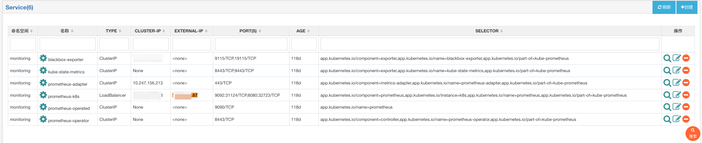
如果默认没有对外开放，可以手动添加一个映射：
进到“管理”-> “云监控”页面，点击添加云监控。

采集添加后，Open-C3上的普罗米修斯就会把Kubernetes中普罗米修斯的数据实时的同步到Open-C3上。

导入后可以看到监控策略，在该服务树上订阅告警。
打开下面目录，导入对应看板：
https://github.com/open-c3/open-c3-guide/tree/main/attachments/monitor/grafana/kubernetes
注：国内地址：
https://gitee.com/open-c3/open-c3-guide/tree/main/attachments/monitor/grafana/kubernetes
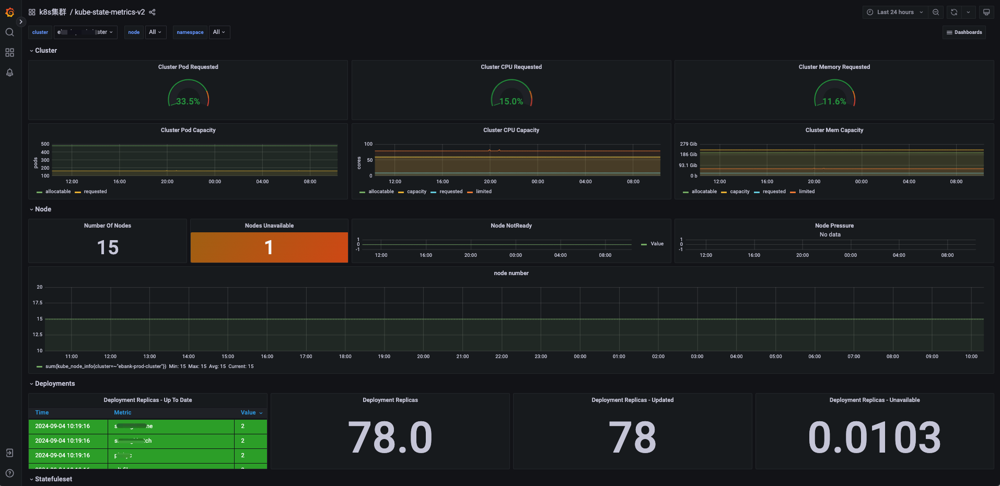
Kubernetes 中的应用，Kubernetes会调度使得应用状态是我们期望的样子。这里的监控更多的是监控POD有没有频繁重启、POD运行数量是不是持续没达到预期的数量。
在Open-C3中，监控分为两种：
直连监控： 要采集的监控数据，是可以通过直接连接监控对象获取的，比如监控主机、数据库等，程序是可以直接和这些对象建立连接获取数据，
云监控： 需要连接外部平台或者系统来采集的数据。 比如我们要采集公有云上Mysql数据库的磁盘使用率，我们是通过云接口获取的。在比如我们监控kubernetes中的pod，我们没有和pod真实建立连接，而是通过部署在kubernetes中的普罗米修斯来获取。
进到”管理”-> “云监控”页面添加和管理云监控的配置。
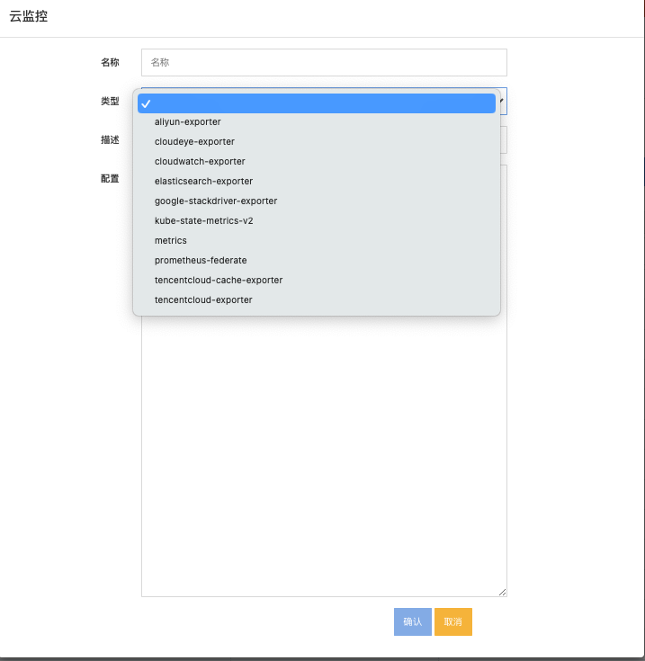
可以看到添加的时候需要选择类型，类型决定了这个采集任务采集的是什么数据。 每一种类型的配置文件都不一样。 可以到open-c3的文档【https://open-c3.github.io】中查看配置文件的格式。
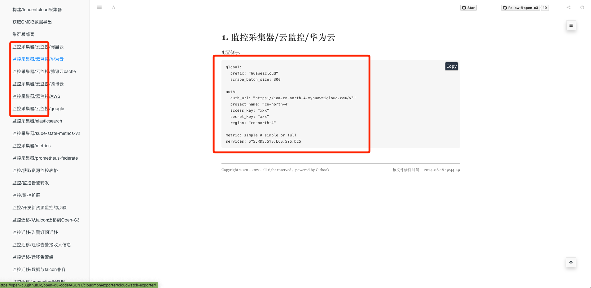
这些配置文件的配置方式是从代码仓库中自动提取的，会更准确和时效。所以这里不重复描述具体的配置格式。
打开下面目录，导入对应看板：
https://github.com/open-c3/open-c3-guide/tree/main/attachments/monitor/grafana/cloud
注：国内地址：
https://gitee.com/open-c3/open-c3-guide/tree/main/attachments/monitor/grafana/cloud
部分云监控的监控看板在 数据库的分类中，根据对应类型进行了存放。 比如腾讯云的cdb，可以在database看板目录的mysql子目录中查找。
云监控部分，因为开源的采集器很多，读者根据自己的情况查找对应的看板。
在企业环境中，我们需要监控监控网络的延迟和丢包情况。
配置
源是发起ping的主机节点。
在 src 目录下，存放源主机分组，每个文件是一个分组，文件每行是个ip或者域名
例子:
[root@open-c3]# ls src
cloud-aws-afs
cloud-huawei-open-c3
[root@open-c3]# cat src/cloud-huawei-open-c3
openc3-fping
[root@open-c3]# cat src/cloud-aws-afs
10.10.10.111
10.10.10.112
在源机器上启动容器
docker run -d --restart=always -p 9605:9605 --name openc3-fping joaorua/fping-exporter fping-exporter --fping=/usr/sbin/fping -c 10
ACL
开放访问权限，让Open-C3机器访问源机器的9605端口
目标
目标是要ping的对象，放在dst目录下，每个文件是一个分组。格式和源一样
配置采集
conf.yml配置着需要采集的任务，是个yaml格式
key是src中源的名称
valus是个数组，数组中的元素是目标的名称，或者一个正则表达式匹配目标中的名称。
特殊情况，当value是 '*'时表示所有目标组
例子:
# cat conf.yml cloud-huawei-open-c3: [ '/country/', '/website/', '/cloud/', '/workplace/' ]cloud-ucloud-ng: [ '/country/', '/website/' ]cloud-huawei-afs: [ '/cloud/' ]cloud-aws-afs: [ '/country/' ]cloud-aliyun-frankfurt: '*'
生成普罗米修斯配置文件
到容器中该目录下执行 ./make.sh 命令
打开下面目录，导入对应看板：
https://github.com/open-c3/open-c3-guide/tree/main/attachments/monitor/grafana/fping
注：国内地址：
https://gitee.com/open-c3/open-c3-guide/tree/main/attachments/monitor/grafana/fping
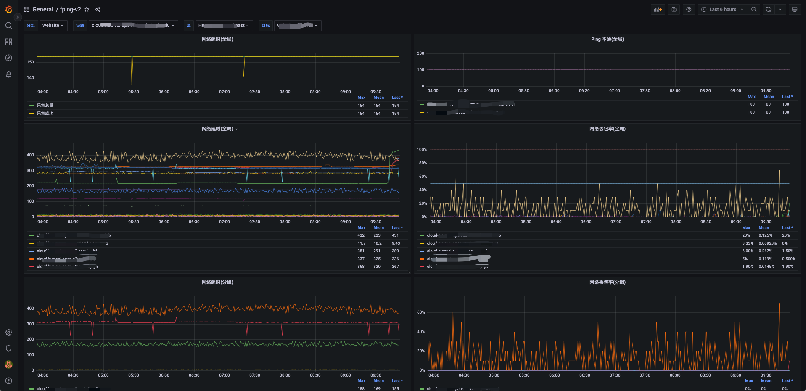
Ping监控在分组起名的时候，用“-”号分隔。 第一个段为分组。
该ping监控可以监控到全局的网络延迟和丢包情况。但是有个弊端，如果Open-C3到源机器丢包严重，可能会采集不到数据。如果有这个担忧可以在源机器上安装kuma程序进行补充监控。
docker run -d --restart=always -p 3001:3001 -v uptime-kuma:/app/data --name uptime-kuma louislam/uptime-kuma:1
有的企业业务模块很多，在业务出现问题时，为了方便运维或者值班人员快速了解业务的上下层级结构。Open-C3根据CMDB中的信息，生成了一个树形结构。从这个结构可以看到域名下面是那个负载均衡器，负载均衡器下面是什么资源、等等。
同时可以进行搜索、比如通过一个域名搜索它下面的结构，或者根据一个服务名称搜索。或者通过Kubernetes的镜像名称进行搜索。
我们在“服务分析”功能中搜索域名进行查看的时候。系统会显示类似： 域名->加速->DNS解析-> 负载均衡 -> nginx -> 负载均衡 -> Kubernetes.service -> Kubernetes.pod 的结构。
在CMDB中，我们会自动获取很多资源，包括所有的nginx的配置文件。因为每个企业的nginx配置路径可能会有所区别，这里看情况进行配置。
默认情况下，我们会把服务树中，名字为nginx的节点下面的机器当作nginx节点。同时我们默认采集 /data/apps/nginx/conf/conf.d、/etc/nginx/conf.d、/usr/local/openresty/nginx/conf/conf.d 下的nginx配置文件到CDMB中进行搜索和分析。

如下是系统默认的配置文件：
# cat /data/open-c3/Connector/pp/service-analysis/nginx/nginx.nodenginx /data/apps/nginx/conf/conf.dnginx /etc/nginx/conf.dnginx /usr/local/openresty/nginx/conf/conf.d
如果采集的nginx内容不符合自己预期。可以在文件名为/data/open-c3-data/service-analysis/nginx.node中配置自己的采集规则。
文件内容的格式为三列。
第一列是资源列表， 可以是ip地址、服务树id、“nginx”字样。
第二列是要采集的目录路径。
第三列是路径的别名，默认情况下可以为空，系统会自动生成。
从本章简介中，我们说到，服务分析功能可以搜索Kubernetes的信息，要展示这些信息，我们需要导入我们的Kubernetes集群。
Open-C3中有kubernetes集群管理的功能。导入kubernetes后，系统会自动获取集群的信息到CMDB中，包括service、pod等。
可以到“容器集群”->”kubernetes应用管理”菜单中找到kubernetes管理页面进行导入。
后面章节还会对集群管理展开讲解，这里就不单独赘述。
可以看到，当搜索资源时，可以看到上下层级的结构。
这样就可以在搜索域名的时候，知道这个域名是那个容器提供的服务，或者搜索一个ip的时候知道是那个域名在使用等。
CMDB中的资源，可以自动的生成服务分析的结构。这样方便了我们查看资源上下层级结构。
跟进上诉章节的描述，我们得知CMDB中已经包含了网站的入口信息，包括nginx的配置。本章节描述网站的监控。会跟进CMDB中的内容，自动生成要监控的URL地址。
监控网站的https证书和返回码。
默认情况下不会自动的进行监控，需要添加监控源。
在/data/open-c3/Connector/pp/mmon/http-monitor/src.txt文件中添加监控的源机器ip或者域名。
在源机器上执行脚本 /data/open-c3/Connector/pp/mmon/http-monitor/start-docker.sh ，脚本会启动一个blackbox容器，端口为9115， 确保Open-C3能访问源机的9115端口。
配置完成Open-C3开始采集监控。
11.2.1 特殊处理
snapshot
有的企业，可能需要监控的url很多。一下子不好排查，可以执行./snapshot-make.sh
它会把当前的情况进行一个锁定。如果监控的url返回码发生变化了在进行告警。
获取3个小时内的数据，获取所有url中的返回码。如果返回码是0的取消，可能是暂时不通。
如果有多个返回码，有200的情况下是200。否则哪个返回码数量多就是哪个。
mark
有的情况下，你可能想自己定义一些要监控的url。在cmdb自动生成的范围之外。
可以把要监控的内容记录到mark.txt文件中，格式可以参考mark.example.txt
ignore
系统根据CMDB自动生成了很多要监控的url，如果有不需要监控的，请记录到ignore.txt文件中。
系统会把这部分url屏蔽掉。
格式是一行一个url，可以参考mark.example.txt文件内容
打开下面目录，导入对应看板：
https://github.com/open-c3/open-c3-guide/tree/main/attachments/monitor/grafana/http-monitor
注：国内地址：
https://gitee.com/open-c3/open-c3-guide/tree/main/attachments/monitor/grafana/http-monitor
本章描述的监控，可以监控到企业总所有入口的服务是否正常。每个企业中对“服务正常”的定义可能不一样，这里暂时不提供监控模版。在有多个数据源的情况下，有的可能认为，所有的都可以请求成功才算服务正常。有的可能只要有一个源可以正常访问服务就算服务正常。
关于主机的监控，默认采集的指标是普罗米修斯Node exporter采集的数据。这些指标是比较固定的。 如果想监控主机上的端口、进程、http等会比较麻烦。Open-C3的监控Agent提供了这部分数据的采集能力。只需要在对应的服务树上配置要采集的内容，系统会给对应服务树下所有的机器下发采集任务。
如下图，在监控告警配置页面，点击“添加监控指标采集”的按钮，可以看到关于端口、监控等监控的配置方式。可以根据页面中的帮助内容查看具体用法。
监控Agent可以下发已经定义的监控任务，同时它可以接受本地的push请求，可以把监控指标push到本机的监控Agent 65110端口上，监控Agent会进行记录，Open-C3系统会把他采集回来。
添加采集只是有了监控的指标，指标具体怎么配置告警策略还需要单独配置。可以参考前面章节的配置方式。

Open-C3提供了一系列的告警指标采集，监控告警，同时有“当前告警”页面可以查看当前正在发生的告警。但是，我们总会有其他没有容纳到系统中的告警，又不方便采集监控指标。所以Open-C3添加了回调接口，允许第三方告警平台把监控告警信息发送给Open-C3，由Open-C3系统来进行通知和统一展示。
Open-C3在收到第三方平台发送过来的告警，需要做识别处理。第三方平台发送过来的内容格式可能千变万化。Open-C3需要在一条告警内容里面识别出来，当前这个告警的对象、告警的名称、当前消息是告警恢复还是告警发生。还有一些辅助的信息。然后根据订阅情况进行消息推送，推送告警内容如下。
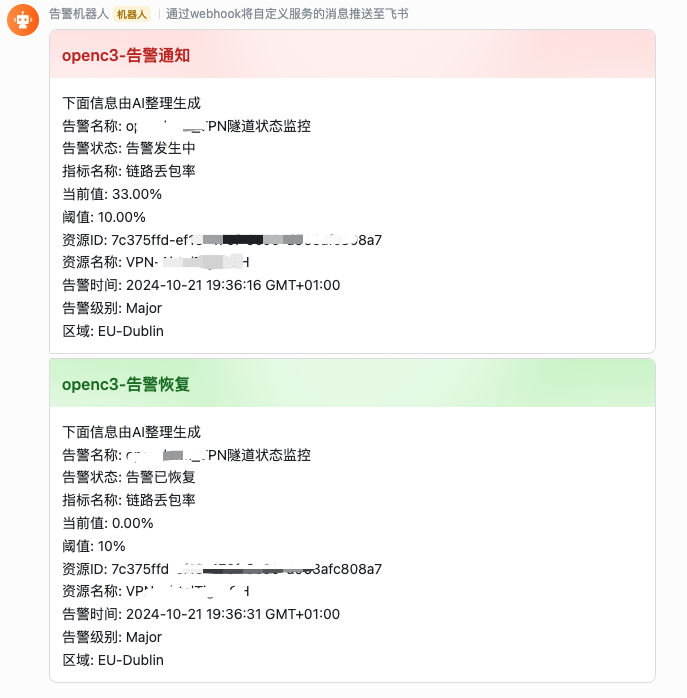
Open-C3识别告警内容的一个更主要的用途是要把它展示在“当前告警”页面。所以当告警源源不断的回调到Open-C3时，Open-C3会根据识别出来的内容进行标记和消除，从而可以达到在“当前告警”页面只展示现在还没有恢复的告警。所以准确的识别回调的内容就尤为重要。
在没有IA之前，我们通过格式匹配的方式。这样每次有新的告警格式，都需要进行一次编码和匹配。
Open-C3当前使用的是AWS的bedrock服务进行告警内容识别。
需要在下面文件中配置bedrock服务的aksk和region。
# cat /data/open-c3-data/sysctl.conf|grep bedrocksys.mai.bedrock.ak: xxxxsys.mai.bedrock.region: us-east-1sys.mai.bedrock.sk: xxxx
当然，如果你没有benrock服务，又需要识别第三方告警内容的话，需要实现一个类似代码中 c3mc-mai-bedrock 这个功能。
13.3.1 配置回调
这里以华为云为例，在华为云SMN中配置
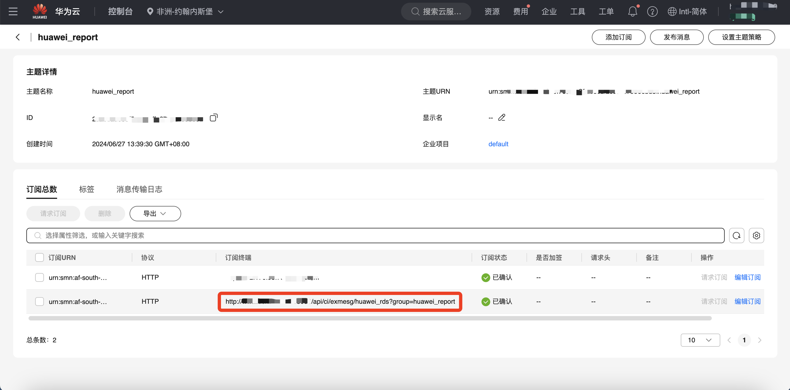
回调的地址为 http://open-c3网址/api/ci/exmesg/huawei_rds?group=huawei_report
回调的地址为 http://open-c3网址/api/ci/exmesg/消息处理方式?group=告警组
例：回调的地址为 http://open-c3网址/api/ci/exmesg/huawei_rds?group=huawei_report
注： 消息处理方式是代码中的一个处理逻辑，如果使用的消息处理方式为定义，会使用默认的处理方式。Open-C3当前只有一个默认的处理方式，也就是前面说的用AI来处理。所以这里写什么字符串都可以。
13.3.2 配置告警组
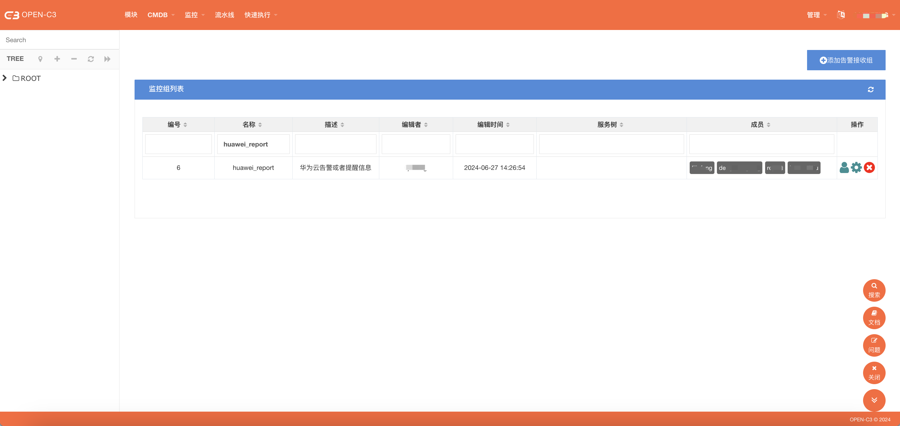
在Open-C3上配置同名的告警组。并把成员添加到告警组中。
有了报警接入的功能，我们可以把基础所有的告警统一到当前告警页面中进行展示和管理。
很多服务都会选择部署在容器中，通过Kubernetes进行管理。Open-C3也集成了Kubernetes的管理功能，一方面是为了管理Kubernetes、另一方面是为了管理CICD。在后续章节中会讲到发布流程会使用Kubernetes应用的信息。
导航菜单进入： 容器集群 -> kubernetes应用管理页面
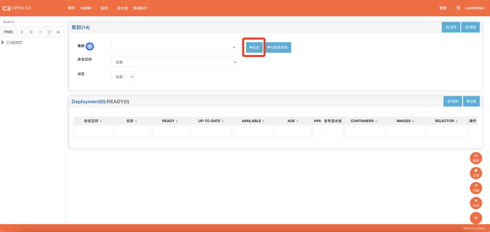
点击添加按钮

把内容填写后点击测试按钮，如果测试成功说明测试没有问题，然后点击保存凭据。

保存后可以看到集群中应用的信息，同时可以创建应用编辑应用等。

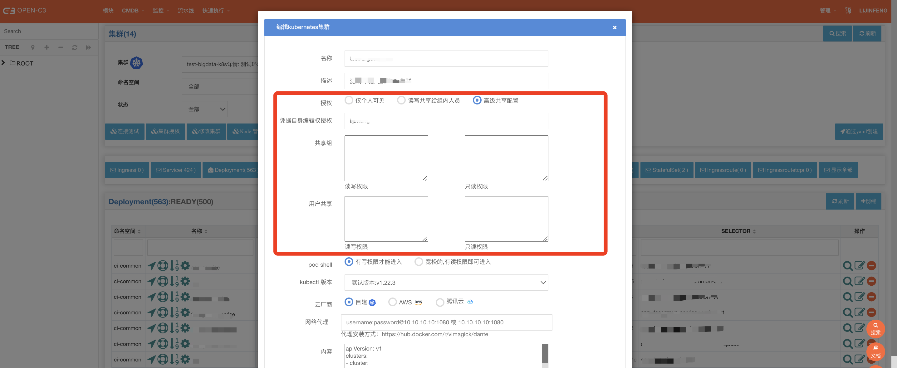
Open-C3的前端没有手机端做全面的适配，但是有的情况下需要在手机上访问Open-C3的页面，比如查看当前告警、对流程进行申请。所以Open-C3提供了一个手机端的Web。
不管使用的http还是https的方式访问Open-C3的页面，如果访问的域名是“app-”或者“app.”为前缀的域名。访问的就是手机端的Web。

快速执行脚本就是在服务树节点下，选择要操作的机器，在机器上执行之前保存的或者现写的脚本。
要使用快速执行脚本功能需要两个条件： 1.机器列表;2.AGENT安装
· 机器列表的两个来源
A)来自服务树资源管理。
B)来自机器管理。
· AGENT安装涉及到AGENT安装和管理。
页面路径:【快速执行】->【脚本执行】

默认生成，也可以进行修改，在执行历史中可以通过名称查找。
· 手工录入，在当前页面进行编辑。
· 脚本克隆，使用脚本管理中的脚本，在这个基础上可以进行再编辑。
· 本地脚本, 和克隆脚本类似，区别是它是一个引用，不可以进行再编辑。
脚本类型决定了怎么去执行该脚本，对应的执行方式如下：
· shell： /bin/bash scripst_path
· python: /usr/bin/python scripts_path
· perl: /usr/bin/perl scripts_path
· php: /usr/bin/php scripts_path
· 自动识别: ./scripts_path
· 内建：内建插件
远程机器上的用户，旁边的添加按钮可以添加用户。也可以到账户管理中进行管理。
添加用户并不会在远程机器上进行用户创建，只是一个本地的管理。在使用部分内建插件时，账号部分会变成票据，按照前端提示选择即可。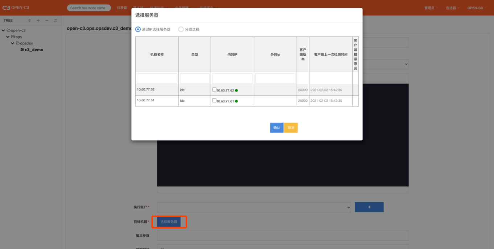
目标机器的两种类型：
· 直接勾选对应的IP。
· 选择机器分组中的机器组。
正常的脚本参数，如脚本参数为: abc 123 ，如果是shell脚本，可以通过$1 获取abc，通过$2获取123。
超时时间，单位为秒。超时后如果运行未结束，会失败退出，对应的脚本会收到kill TERM信号。
这里的“生产环境”，“生效动作”，“分批”三个开关可以先忽略，在流水线中在展开讲解，此处先都默认选择“总是执行”
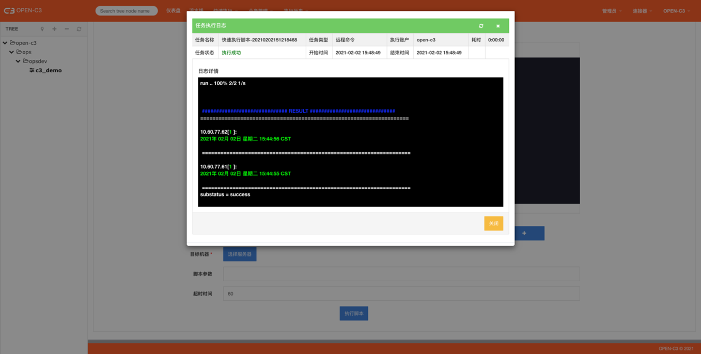
页面路径: 【执行历史】->【作业任务】

快速分发文件就是在服务树节点下，在服务器之间同步数据，源数据也可以是用户上传的文件。
要使用快速执行脚本功能需要两个条件： 1.机器列表;2.AGENT安装
· 机器列表的两个来源
A)来自服务树资源管理。
B)来自机器管理。
· AGENT安装涉及到AGENT安装和管理。
页面路径：【快速执行】->【分发文件】
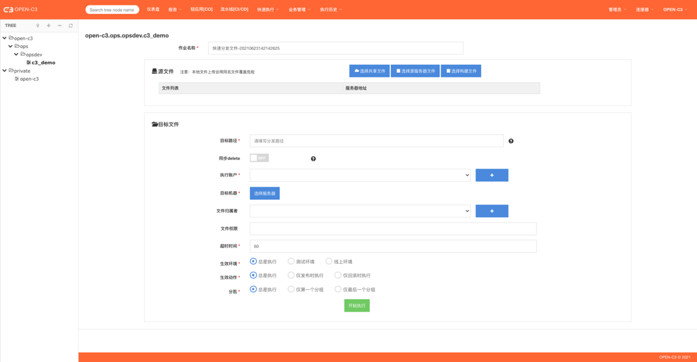
I)作业名称
默认生成，也可以进行修改，在执行历史中可以通过名称查找。
II)源文件
源文件有三种选择：
A)共享文件

文件管理是针对单一服务树，用户可以通过页面或者命令行方式上传文件。
共享文件存储在OPEN-C3的服务器上，如果是集群版，会存储在一个网络文件系统中。
共享文件可以在该页面上传，也可以到文件管理页面进行管理。
B)源服务器文件
文件在某个或者多个机器上，选择文件所在机器IP和文件路径。
源机器可以是多个，同步过程会多对多进行进行同步。
C)构建文件
选择构建文件，说明文件来自于流水线中的构建文件。
可以先忽略，在流水线中再进行详解。
III)目标路径
目标路径以"/"结尾代表一个目录，文件会同步到该目录下，如果不是"/"结尾代表文件路径，这个就是最终的文件名。
目标路径中如果不存，系统会自动创建。
IV)同步delete
如果源路径和目标路径都为"/"结尾，表示目录之间的同步。 “同步delete”打开时，会删除目标路径多出来的文件。
V) 执行账户
同步操作使用的执行用户，旁边的添加按钮可以添加用户。也可以到账户管理中进行管理。
添加用户并不会在远程机器上进行用户创建，只是一个本地的管理。VI)目标机器
目标机器的两种类型：
· 直接勾选对应的IP。
· 选择机器分组中的机器组。
VII)文件所属者
等同于通过chown在远程服务器上修改文件所属。用户列表管理方式同上述“执行账户”。
VIII）文件权限
等同于在远程机器上通过chmod修改文件属性， 此处可以写755。
IX）超时时间
超时时间，单位为秒。超时后如果未运行结束，会失败退出。
X)其他开关
这里的“生产环境”，“生效动作”，“分批”三个开关可以先忽略，在流水线中再展开讲解，此处先都默认选择“总是执行”。

页面路径: 【执行历史】->【作业任务】
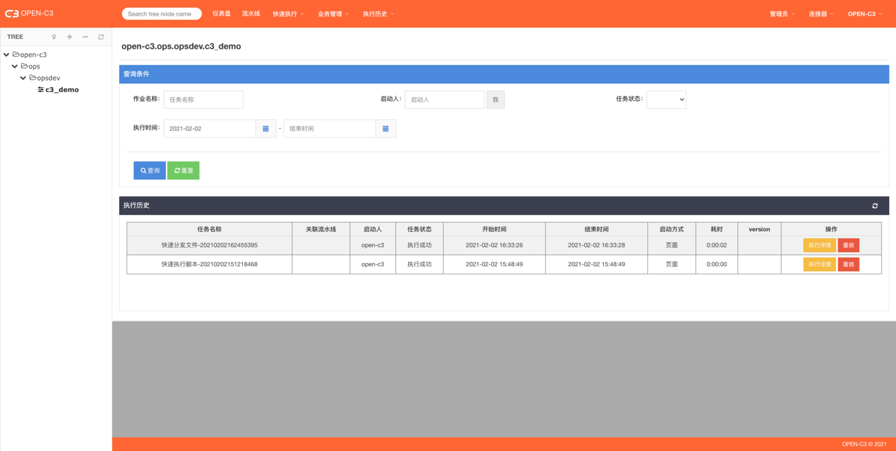
OPEN-C3提供的webshell登录远程服务器和批量操作的功能。
要使用快速执行脚本功能需要两个条件： 1.机器列表;2.AGENT安装
v 机器列表的两个来源
Ø 来自服务树资源管理。
Ø 来自机器管理。
v AGENT安装涉及到AGENT安装和管理。
页面路径:【快速执行】->【虚拟终端】
v 颜色
IP旁边会的小圆点：
Ø 红色： 异常，异常原因表格中会显示。
Ø 绿色： 正常，可以正常调用。
Ø 灰色： 未开启定时检测，可以在AGENT安装和管理页面，通过"自动检测开关"开启定时检测。
v 远程shell
点击页面中的IP会跳转到远程主机的web shell中

跳转到如下shell
v 批量操作
通过勾选多个需要操作的机器进行批量操作

点击开始操作跳转到批量操作shell中

注：
批量执行不是一个真实的shell，每次点击回车都是一个单独的调用，所以需要注意某些操作会不适宜。
例如：先执行cd然后再执行命令，如果拆分成两次提交，cd不能起到进入一个目录的目的。
需要连着写："cd /tmp/foo; touch abc.txt"。
v 权限问题
研发可以使用nobody用户，运维或者管理员角色可以使用任意账户。
OPEN-C3提供了一个方式让用户把文件上传到远程服务器和从远程服务器下载文件。
上传和下载的文件会通过文件管理作为中转站。
要使用快速执行脚本功能需要两个条件： 1.机器列表;2.AGENT安装
v 机器列表的两个来源
Ø 来自服务树资源管理。
Ø 来自机器管理。
v AGENT安装涉及到AGENT安装和管理。
页面路径:【快速执行】->【文件发送】
点击机器IP或机器名进入机器文件管理。
v 选择机器
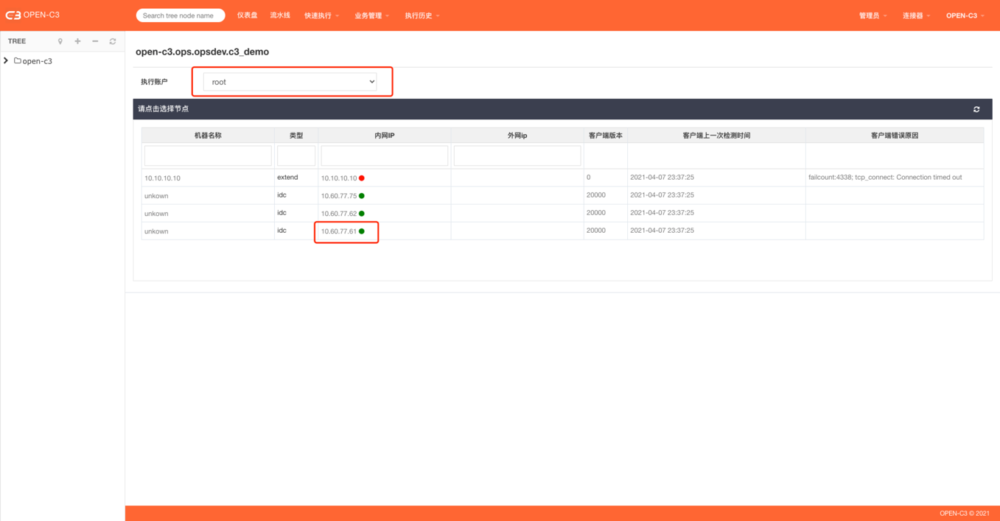
v 颜色
IP旁边会的小圆点：
Ø 红色： 异常，异常原因表格中会显示。
Ø 绿色： 正常，可以正常调用。
Ø 灰色： 未开启定时检测，可以在AGENT安装和管理页面，通过"自动检测开关"开启定时检测。
v 文件管理
执行用户：选择文件上传和下载的用户。【现在只有运维角色有权限进行操作，以后允许研发可以使用nobody用户进行操作】
左边:远程机器目录列表，可以点击进入子目录，也可以返回上一层目录。
手动输入地址：可以直接手写地址进行查询和管理。【可以写多个机器，用逗号分隔】
右边文件列表：为业务管理中的文件管理，这里起到中转站的功能。
任务：上传文件到远程机器或者下载文件到中转站会产生一个任务。
刷新：页面不会定时刷新，如果需要刷新列表，需要点击刷新按钮，远程机器的文件列表可能随时会变。
重置：点击重置进入最开始页面重新选择机器。 可以在操作的时候直接打开机器虚拟终端【这里不支持一次打开多个机器的情况】。

默认情况下OPEN-C3安装完后不能正常使用该功能，
需要在OPEN-C3的机器中也安装AGENT。
首先看一下什么是一个作业？
OPEN-C3提供三种操作功能：
· 执行脚本： 快速执行脚本
· 同步文件： 快速分发文件
· 审批： 发起审批
这三个操作步骤可以进行随意的编排，一个编排好的流程就是一个作业。
区别：和单独使用时相比，每个步骤多了一个字段“结束是否暂停”，如果填写了内容，
运行完该步骤后，作业会暂停，需要人工确认后才会继续执行。页面路径: 【业务管理】->【作业管理】
在该页面可以对作业进行增删改查。
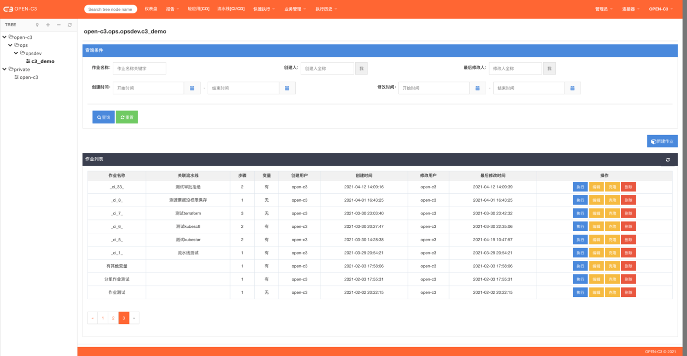
下面演示了“不使用变量”和“使用变量”的作业执行时的区别。点击查看作业变量详细用法。
可以看到存在变量的作业在执行时需要填写具体的值。
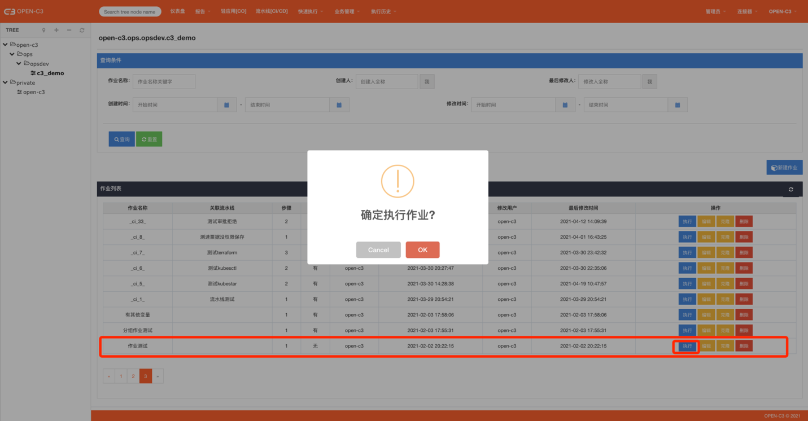

定时任务就是把作业任务配置成一个定时执行的任务。
定时任务中的作业只能使用没有变量的作业，否则定时任务会因缺少变量的值而启动失败。
如果已经配置了定时任务后，再把作业改成有变量的作业，那么作业启动会失败。
注：在配置定时任务时，作业下拉列表只显示没有使用变量的作业。
如果不清楚作业和作业变量的问题，请查看作业任务详细文档后在使用定时任务的功能。
页面路径： 【业务管理】->【定时作业】

定时任务的名称，和作业名称区分开，一个作业可以配置多个定时任务。
该下拉框只能选择不需要变量就能启动的作业。
和linux中的crontab规则一致。
* * * * *- - - - -| | | | || | | | +-----星期中星期几(0 - 7) (星期天为0)
| | | +----------月份(1 - 12)
| | +---------------一个月中的第几天(1 - 31)
| +--------------------小时(0 - 23)
+-------------------------分钟(0 - 59)
例:
·
每一分钟执行一次 ： *
* * * *
·
在 12 月内,
每天的早上 6 点到
12 点，每隔 3 个小时
0 分钟执行一次： 0
6-12/3 * 12 *
·
周一到周五每天下午 5:00 ：0 17 * * 1-5
·
每月每天的午夜 0 点
20 分, 2 点
20 分, 4 点
20 分....执行： 20
0-23/2 * * *
定时任务在执行时可能存在上一个任务执行没结束的情况，如5分钟定时执行某任务A，但是异常情况下A任务5分钟没执行完。
这时候可以选择使用互斥锁功能，如果上一个任务没结束，下一个定时任务就不会启动。
锁名是一个字符串，如果需要多个锁任务之间进行互斥，可以使用相同的字符串。（勾选上互斥锁后才会看到这个输入框）
开始【新创建的定时任务默认是不开启的状态，需要手动开启】
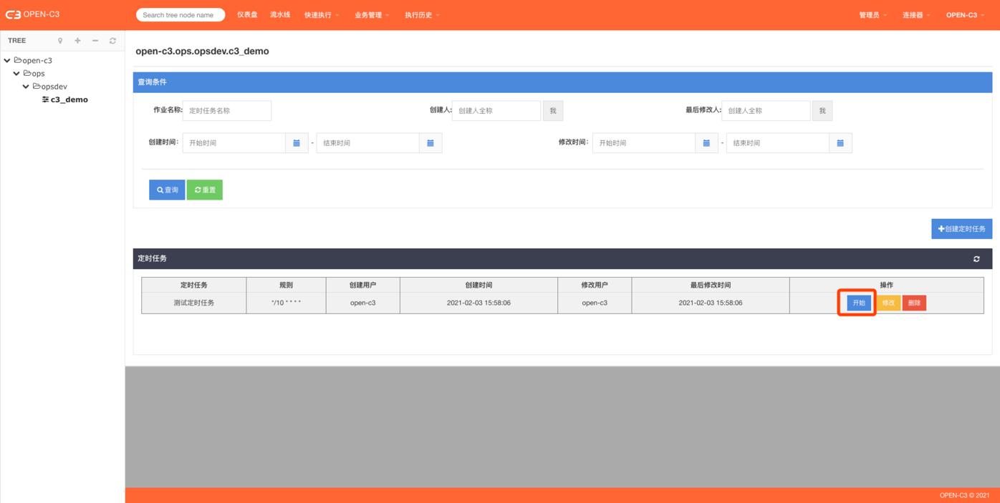
暂停


在使用分组作业功能前，先要能够准确的理解和使用作业任务。
分组作业就是通过机器分批把机器分成多个组后，结合作业任务，分批的进行作业任务的调用。
页面路径：【快速启动】->【启动任务】
注：这个位置可以调用作业任务和分组作业。根据作业中的ip变量进行控制。
先选择作业，系统判断如果作业中存在ip变量的情况。
前端上会显示出来机器分批。需要进去机器分批的选择。
没有ip变量：
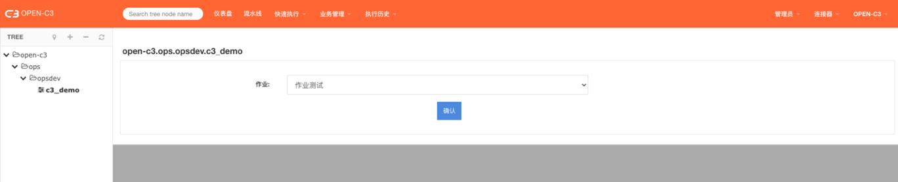
分组作业：
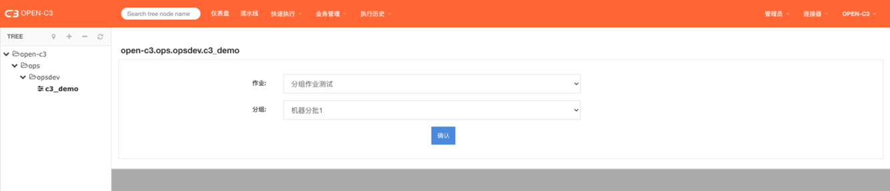
有其他变量：
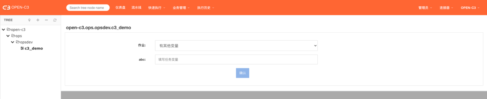
请到【执行历史】-> 【分组任务】 查看分组任务。
在看流水线之前，需要了解什么是分组作业。
流水线是一个CI/CD的一整套过程，其中CD部分包括“测试环境”和“线上环境”，这两个环境使用同一个作业。通过分组作业灰度发布。
页面路径：【流水线】
创建流水线有两种方式，一个是创建空白流水线，一个是通过模版创建，任何一个流水线都可以保存成模版方便同类应用使用。

创建流水线后可以对流水线进行如下操作。
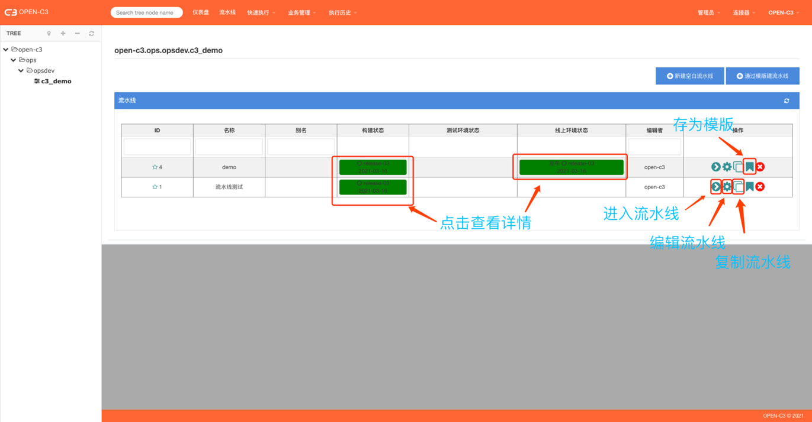
其中灰色按钮不可以点击，配置了对应的配置变成绿色按钮后才生效。
如要回滚时点击对应的版本进行回滚。

编辑页面包括了流水线的整个配置：
开关：流水线开关，如流水线弃用可以设置成关闭。
定时发现tags：开启后系统会定时查询git或者svn中的tag。如果关闭情况可以进入流水线进行手动触发。
自动构建：发现tag后自动构建，如果关闭情况不会自动构建，需要进入流水线手动点击。
代码地址：git或者svn地址，通过地址类型系统自动判断是git还是svn，git通常以“.git”结尾。
tag正则：希望匹配的tag，默认情况下已经过滤release-开头的tag才有效。
代码仓库票据：拉代码需要的票据，票据在个人页面进行管理
依赖：代码依赖，类似于git中的submodule。
build镜像：构建代码需要的镜像。如不需要构建该处选择空。如选择了镜像，需要填写一个构建脚本。
构建过程，构建的脚本路径在/build/run代码在/build/data。构建结束需要生成目标目录/build/dist。
构建结束后，系统判断如果存在目标目录，判定为构建成功。
所以这里目标目录的产生过程要是一个原子操作，可以先把目录生产在如/build/temp处，
然后mv /build/temp /build/dist来保证目标目录的完整。
触发脚本：构建结束后可以调用脚本进行二次处理，比如docker build然后上传镜像到harbor。
脚本票据：触发的脚本如果需要票据在这里选择上，如上传harbor需要权限，这里可以选择对应的票据。
发布配置：
自动触发线上发布：“ON”的情况下表示构建成功后自动触发线上环境的发布。
自动触发测试发布：“ON”的情况下表示构建成功后自动触发测试环境的发布。
系统会先调用测试环境的发布，然后调用线上环境的发布，如果测试环境发布失败则不会在调用线上环境的发布。线上环境发布过程中会自动填写回滚版本。（上一次正常成功发布或者回滚的版本） 如果开关都打开的情况，构建过程先调用测试环境的发布，等待测试环境正常结束后才调用线上环境的发布，但不会等线上发布结束就直接退出。
测试分组和线上分组的配置方式和机器分批方式一样。

作业步骤配置方式和作业管理中作业的配置方式一样。

通过一个流水线复制出另一个流水线。
存为模版，在创建的时候可以选择模版来创建，模版的权限是全局的，存为模版后整个系统内共享。
删除该流水线，删除后不能恢复，请谨慎删除。
OPEN-C3在使用过程中会自动生成报告。当前包含两类报告：《git报告》和《流水线报告》。
报告数据包括：
· current： 最近七天的报告。
· xxxx-xx-xx.week: 每周一生成上一周的报告。
· xxxx-xx.month: 每月15号生成上一个月的报告。
· xxxx.year: 每月15号生成到上一个月为止当年的报告。
在每个服务树节点中，如果服务树中配置了流水线，系统会每凌晨对提交的代码进行统计。
研发部门可以看到代码提交的情况，通过不同的维度进行展示（如： 按照星期分布，按照时间点分布）。
为了更真实的展示代码的提交情况，系统对提交的代码进行了去重。同时忽略掉merge操作的提交。
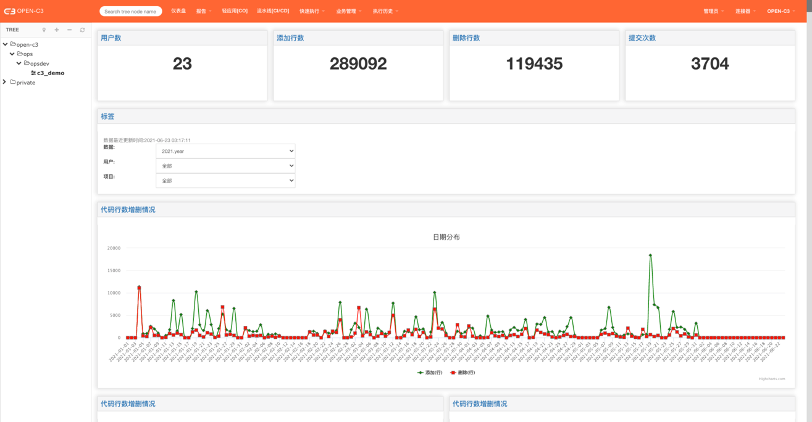
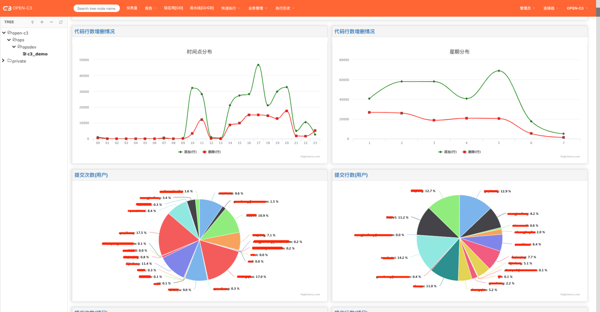
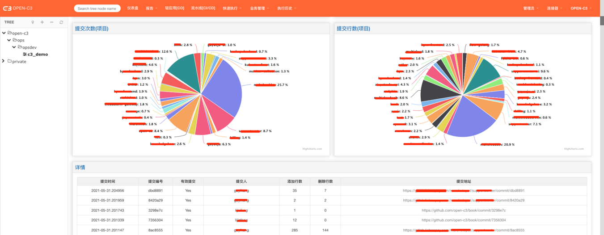
如果要对整个公司的代码生产报告，可以让OPEN-C3管理员在服务器上进行如下操作：
touch /data/glusterfs/gitreport/4000000000.watch系统会把所有节点下的报告去重后生成在private服务树节点下。
系统会每个小时对流水线的发布情况生成新的报告。可以看出构建、发布、回滚的情况。
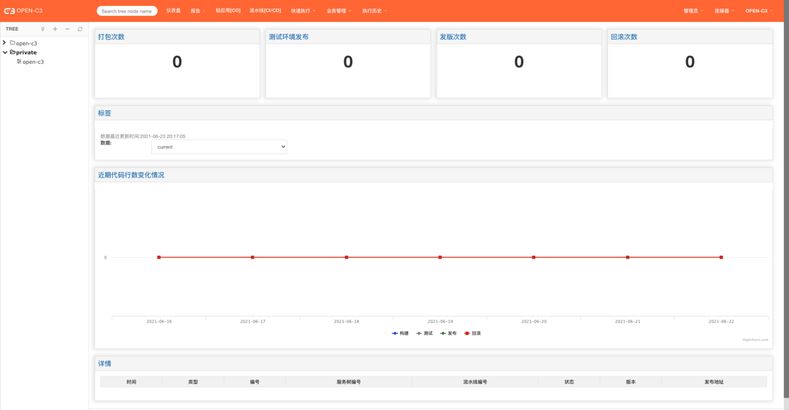
如果要对整个公司流水线发布生产报告，可以让OPEN-C3管理员在服务器上进行如下操作：
touch /data/glusterfs/flowreport/4000000000.watch系统会所有节点下的报告去重后生成在private服务树节点下。
在运维和运营过程中，我们通过OPEN-C3的作业编排功能固化下一个流程，
这个流程可能是一个资源编排，也可能是一个更新服务的动作，也可能是一个申请权限的操作。
但是我们所有的作业流程都是分散在服务树节点中的，同时也和很多其他类型的作业进行了混搅。
所以OPEN-C3提供了一个方式，把一些常用的，或者需要提供给研发、运营使用的流程集中在一个页面进行归类。
这些流程很简明的完成了一个动作，我们称之为“轻应用”。
使用轻应用需要几个步骤：
· 学习OPEN-C3作业任务的用法。
· 管理员在【管理员】->【轻应用配置】页面把需要设置成轻应用的作业挑选出来。
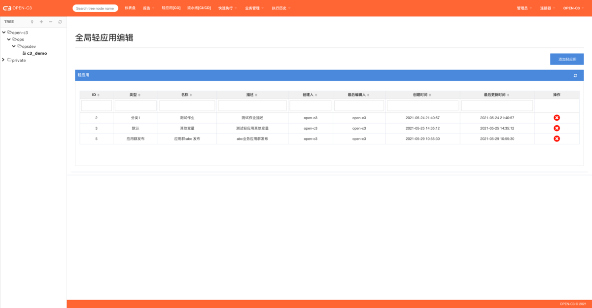
OPEN-C3的权限是根据服务树进行管理的，这意味着一个问题，
可能不存在一个服务树节点，对所有的人都可见和可操作。
平台部署完后，如果需要一个地方存放一些演示的配置提供他人参考，这里就用到了演示广场。
OPEN-C3会默认生产一个名为“private”的服务树节点，这个节点下所有人有查看和编辑器的权限。
【除了不能通过机器管理的方式往服务树节点添加机器，这个是管理员才能完成的操作】
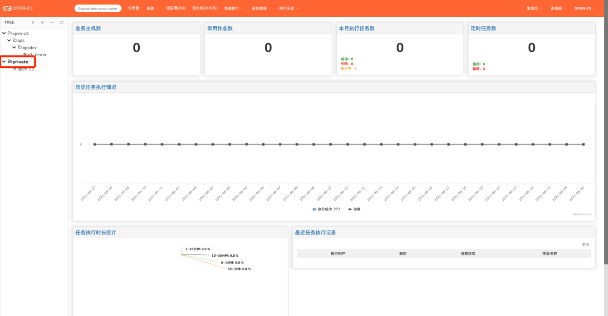
OPEN-C3中有一个叫做演示广场的服务树节点。
系统会给每个用户在演示广场的节点下创建一个用户自己的节点。
这个节点下只有这个用户有所有权限。
【除了不能通过机器管理的方式往服务树节点添加机器，这个是管理员才能完成的操作】
下图可以看到用户名为“open-c3”的服务树节点。
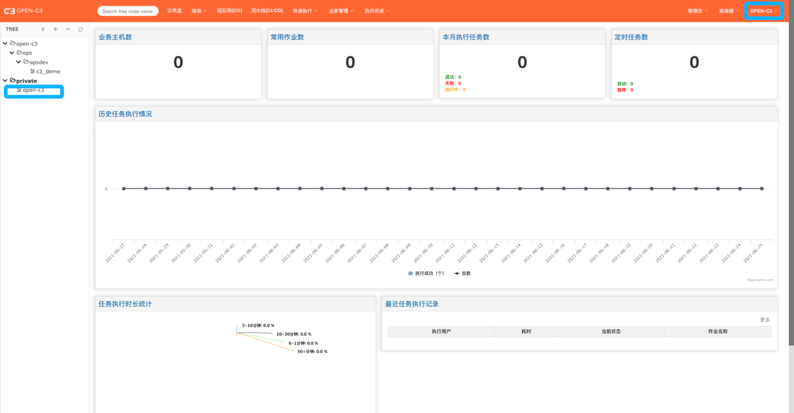
如某个用户需要有某个测试机或者开发机的完全操作权限，
然而出于某种原因，这部分服务器并没有能够根据人的维度体现在已有服务树上。
这时候管理员可以直接在这个用户的节点下添加该机器的IP以授权。
页面路径：【管理员】->【私有节点管理】
每个用户登录后系统会自动创建一个用户自己的节点，如果用户没有登录过系统，
管理员可以先手动先添加用户再进行机器管理。
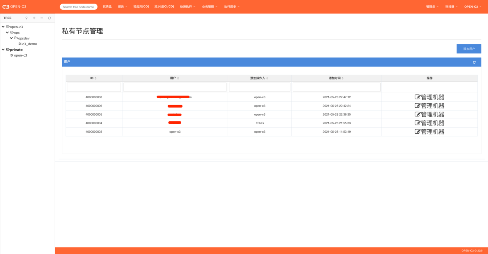
OPEN-C3支持通过内建插件对各CDN厂商的CDN进行刷新。
支持的CDN厂商：
· aliyun: 阿里云
· aws: AWS
· chinacache: 蓝汛
· dnion: 帝联
· exclouds: 逸云
· huawei: 华为
· isurecloud: 云端智度
· jscdn: 金山云
· qcloud: 腾讯
· qingcdn: 白山云
· qiniu: 七牛
· ucloud: ucloud
学习OPEN-C3内建插件cdnrefresh的用法。cdnrefresh插件用于刷新CDN。
CDN刷新需要使用账号信息，这部分信息通过票据进行管理。
新建票据，票据类型选择“插件”，票据的内容格式如下的kv键值。
export openc3_cdnrefresh_cdn_abc="123"v 厂商对应需要的票据键值
Ø aliyun【阿里云】
§ openc3_cdnrefresh_aliyun_accessKey
§ openc3_cdnrefresh_aliyun_accessSecret
§ openc3_cdnrefresh_aliyun_regionId
Ø aws【AWS】
§ 无
Ø chinacache【蓝汛】
§ openc3_cdnrefresh_chinacache_username
§ openc3_cdnrefresh_chinacache_password
Ø dnion【帝联】
§ openc3_cdnrefresh_dnion_username
§ openc3_cdnrefresh_dnion_password
Ø exclouds【逸云】
§ openc3_cdnrefresh_exclouds_Authorization
Ø excloudsPrefetch【逸云】预热
§ openc3_cdnrefresh_exclouds_Authorization
Ø huawei【华为】
§ openc3_cdnrefresh_huawei_ak
§ openc3_cdnrefresh_huawei_sk
Ø isurecloud【云端智度】
§ openc3_cdnrefresh_isurecloud_appid
§ openc3_cdnrefresh_isurecloud_appsecret
Ø jscdn【金山云】
§ openc3_cdnrefresh_jscdn_access_key
§ openc3_cdnrefresh_jscdn_secret_key
Ø qcloud【腾讯】
§ openc3_cdnrefresh_qcloud_secretId
§ openc3_cdnrefresh_qcloud_secretKey
Ø qingcdn【白山云】
§ openc3_cdnrefresh_qingcdn_token
Ø qingcdnPrefetch【白山云】预热
§ openc3_cdnrefresh_qingcdn_token
Ø qiniu【七牛】
§ openc3_cdnrefresh_qiniu_ak
§ openc3_cdnrefresh_qiniu_sk
Ø ucloud【ucloud】
§ openc3_cdnrefresh_ucloud_public_key
§ openc3_cdnrefresh_ucloud_private_key
§ openc3_cdnrefresh_ucloud_project_id

使用内建插件，点击cdnrefresh类型。
脚本内容：
#!cdnrefreshf:/index.htmlf:/bar/index.htmld:/foo/d:/abc/def/每一行是一个要刷新的地址，文件以“f:”开头，目录以“d:”开头。
脚本参数： 厂商名称 要刷新的域名【例：ucloud foo.com】
[root@openc3-srv-docker cdnrefresh.code]# ll /data/Software/mydan/JOB/buildin/cdnrefresh.codetotal 60-rwxr-xr-x. 1 root root 3189 Jul 2 22:01 aliyun-rwxr-xr-x. 1 root root 2172 Jul 2 20:54 aws-rwxr-xr-x. 1 root root 2445 Jul 2 22:03 chinacache-rwxr-xr-x. 1 root root 3067 Jul 2 22:04 dnion-rwxr-xr-x. 1 root root 2409 Jul 2 21:05 exclouds-rwxr-xr-x. 1 root root 3702 Jul 2 21:06 excloudsPrefetch-rwxr-xr-x. 1 root root 3984 Jul 2 22:07 huawei-rwxr-xr-x. 1 root root 2656 Jul 2 21:33 isurecloud-rwxr-xr-x. 1 root root 4475 Jul 2 21:36 jscdn-rwxr-xr-x. 1 root root 2719 Jul 2 21:53 qcloud-rwxr-xr-x. 1 root root 2224 Jul 2 21:55 qingcdn-rwxr-xr-x. 1 root root 3486 Jul 2 22:11 qingcdnPrefetch-rwxr-xr-x. 1 root root 3211 Jul 2 21:57 qiniu-rwxr-xr-x. 1 root root 3992 Jul 2 22:00 ucloud每一个可以刷新的厂商对应该目录下一个可执行文件，现有的文件都是用python编写的，系统维护人员需要安装python依赖包。